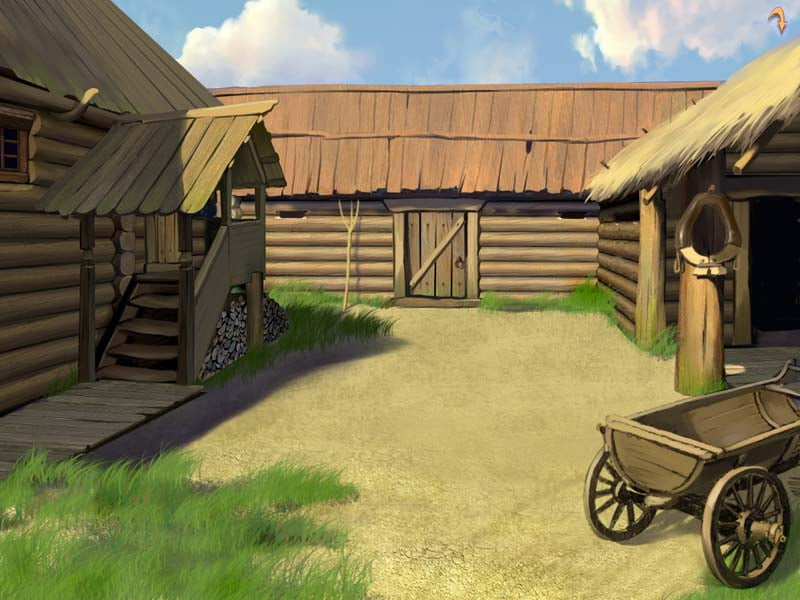

Главный объект

Перед нами типичная деревянная усадьба конца XIX столетия. Ее жилой дом и надворные постройки образуют замкнутый, уединенный двор, внутри которого была четко организована бытовая жизнь. Здесь и сегодня легко почувствовать неторопливый ритм и уют ушедшей эпохи.
Усадьбу возводили по традиционным правилам, опираясь только на старинные секреты плотницкого дела. Такой двор в форме буквы «П» спасал от сильного ветра и холода. При построении усадьбы учитывались и стороны света, так чтобы окна избы ловили как можно больше солнечного света и тепла.
Этот деревянный двор — яркий пример того, как архитектура может дарить человеку чувство абсолютной защищенности и покоя. Вместо массивного камня мастера использовали живое дерево, создав удивительно теплое и гостеприимное пространство. Простая и честная геометрия построек напоминает нам о временах, когда люди умели замедляться, ценить ручной труд и жить в идеальном согласии с окружающим миром.
Галерея

Маршрут экскурсии
- [Первый объект маршрута]
- [Второй объект маршрута]
- [Третий объект маршрута]